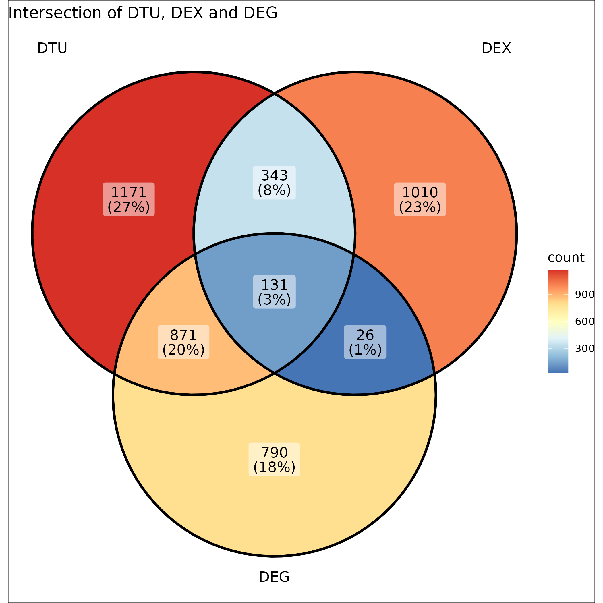

差异表达分析交集结果报告
差异表达分析交集结果报告
分析概述
本分析整合了三种不同的差异表达分析方法的结果：
- DTU (差异转录本使用分析)
- DEX (差异外显子使用分析)
- DEG (差异基因表达分析)
筛选标准：
- 显著性水平：p < 0.05
- 差异倍数：|log2FC| > 1
结果汇总
KO4 vs WT比较

三种分析方法共同鉴定出的差异基因数量以及代表性基因列表见：
results/103.intersect/KO4_vs_WT_intersection_p0.05_fc1.0.tsv
KO5 vs WT比较
三种分析方法共同鉴定出的差异基因数量以及代表性基因列表见：
results/103.intersect/KO5_vs_WT_intersection_p0.05_fc1.0.tsv
KO5 vs KO4比较

三种分析方法共同鉴定出的差异基因数量以及代表性基因列表见：
results/103.intersect/KO5_vs_KO4_intersection_p0.05_fc1.0.tsv
转录本切换分析结果
在交集基因的基础上，我们进一步分析了转录本的切换事件。分析使用IsoformSwitchAnalyzeR包进行，主要关注以下几个方面：
- 转录本切换事件的鉴定
- 可能的功能影响预测
- 转录本结构变化分析
KO4 vs WT比较
转录本切换分析结果见以下文件：
- 切换事件汇总: results/104.isoformswitch/KO4_vs_WT_summary.csv
- 转录本特征详情: results/104.isoformswitch/KO4_vs_WT_isoformfeatures.csv
关键切换事件的可视化结果保存在：results/104.isoformswitch/KO4_vs_WT/目录下。
KO5 vs WT比较
转录本切换分析结果见以下文件：
- 切换事件汇总: results/104.isoformswitch/KO5_vs_WT_summary.csv
- 转录本特征详情: results/104.isoformswitch/KO5_vs_WT_isoformfeatures.csv
关键切换事件的可视化结果保存在：results/104.isoformswitch/KO5_vs_WT/目录下。
KO5 vs KO4比较
转录本切换分析结果见以下文件：
- 切换事件汇总: results/104.isoformswitch/KO5_vs_KO4_summary.csv
- 转录本特征详情: results/104.isoformswitch/KO5_vs_KO4_isoformfeatures.csv
关键切换事件的可视化结果保存在：results/104.isoformswitch/KO5_vs_KO4/目录下。
转录本切换的功能影响
每个比较组的转录本切换可能导致的功能影响见对应目录下的common_switch_consequences.pdf文件，主要包括：
- 内含子保留(Intron retention)
- 开放阅读框变化(ORF changes)
- 非正常剪接降解(NMD)的影响
这些结果有助于理解基因表达调控的具体机制，以及不同基因型之间的分子表型差异。
结论
- 三种分析方法各有优势，它们的交集可以帮助我们找到最可靠的差异表达基因
- 交集基因很可能在生物学功能上具有重要意义，建议进行后续功能验证
- 可以看到不同KO组与WT的比较中，交集基因数量和模式存在差异，说明不同基因敲除可能影响了不同的调控通路
下一步分析建议
- 对交集基因进行GO/KEGG富集分析
- 验证重要基因的表达水平
- 进行转录本结构的详细分析